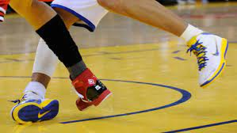
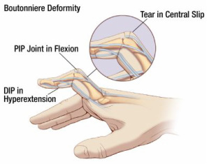
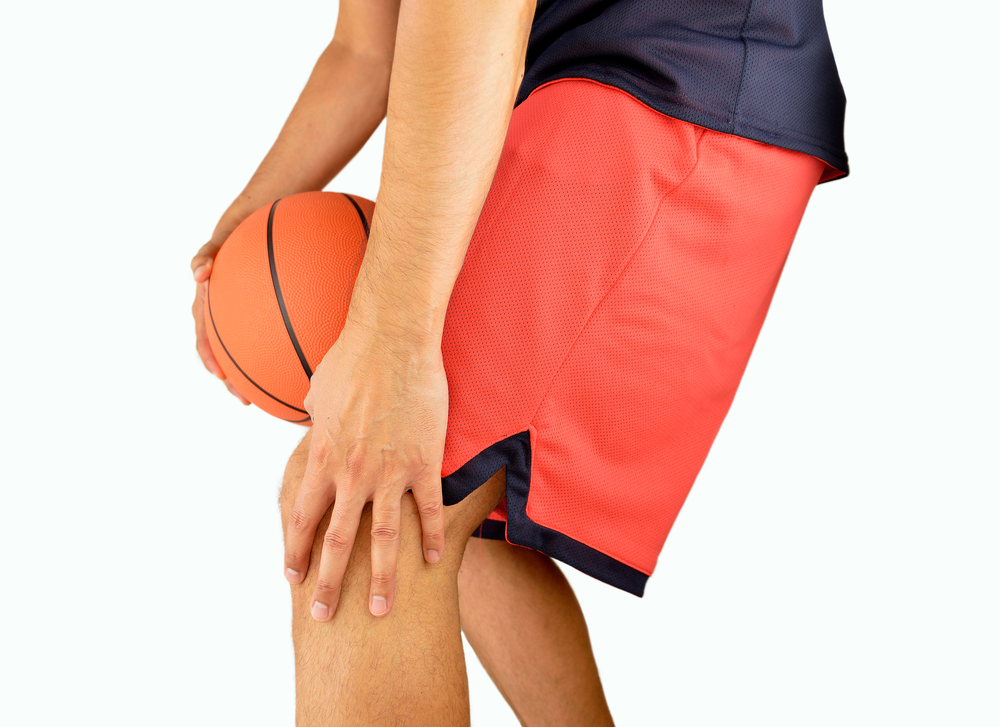
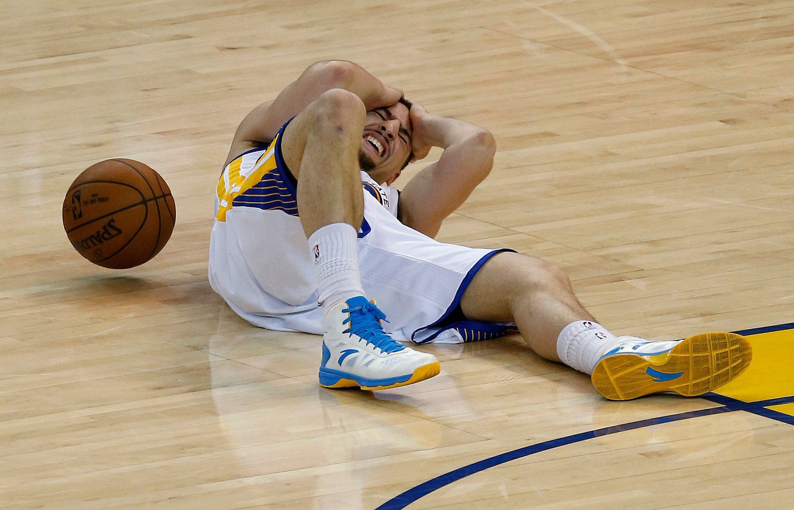

A sprained ankle is an injury that occurs when you roll, twist or turn your ankle in an awkward way. This can stretch or tear the tough bands of tissue (ligaments) that help hold your ankle bones together. Signs and symptoms of a sprained ankle vary depending on the severity of the injury. They may include: Pain, especially when you bear weight on the affected foot, Tenderness when you touch the ankle, Swelling, Bruising, Restricted range of motion, Instability in the ankle, Popping sensation or sound at the time of injury.
Players can prevent this ankle injury by wearing the proper athletic shoes that provide support and will help to avoid slipping on the court. An ankle brace is also a great way for players to support the joint and prevent a sprained ankle.
They normally occur when the tip of the finger hits the ball “head on” without bending. This motion can lead to swelling in the finger and immediate pain. This action can cause the ligaments in a person’s finger to become overstretched or strained.
Because jammed fingers occur from a traumatic impact, they are difficult to prevent. However, by practicing proper technique for catching the ball, you can make sure you are better prepared to avoid finger jams.
Knee injuries are very common in basketball. The three most common knee injuries include the anterior cruciate ligament (ACL), Meniscus and patella tendon. If you watch or play basketball, you have likely heard of these injuries. An ACL tear is probably the most talked about. The ACL is one of the bands of ligaments that connect the thigh bone to the shin bone at the knee. If an ACL is torn, it generally requires surgery and months of physical therapy to return to play. The meniscus is the little brother of the ACL. Every knee has two, and oftentimes they are injured along with the ACL. The meniscus is the cushioning of the knee joint. Without them, the thigh bone would sit directly on top of the lower leg bones, which would get uncomfortable quickly. Treatment for meniscus injuries can vary from ICE, to surgery and physical therapy, to just physical therapy.Lastly, patella tendonitis, typically known as jumper’s knee, is the most common knee injury. It is a result of inflammation of the patella tendon which connects your kneecap to your shin bone. Jumper’s knee can usually be healed with a personalized exercise plan from a physical therapist.
Get in good physical shape. This is of extreme importance for not just basketball, but any sport you do, because being fit will help you avoid pain and inflammation. If you haven’t been active for a longer period, start slowly and gradually increase the level of your physical activity. It’s important that your knees are strong before you start playing basketball because they bear all the pressure.Warm up before you start shooting hoops. Even if you do this in your backyard, make sure your body is ready for the game. Cold muscles are more prone to injuries. A 10 minute warm up is always a good idea.Use a good playing technique. Make sure you focus on your movements and positions. Open your eyes and watch if other players are running into you.Stay hydrated. Make sure you drink enough water or fresh juices during the game, and afterwards. Your body needs the fluids to effectively cool itself down after the sweating and evaporation you experienced during the game. This impacts the elasticity of your muscles, tendons, and ligaments.Play on a dry, clean field. Make sure there are no bumps or holes on the surface of the court.After you finish the game, gently stretch your body. After all the running and jumping, you need to let the body know that it will cool down. Stretching helps the muscles, ligaments and tendons relax, thus preventing inflammation and soreness.If you start feeling any pain, or if your knees start feeling weird, stop! Before you continue with the game, make sure your knees feel good and strong. Ignoring the signs of an injury can lead to developing a serious knee condition.
A concussion is brain injury that occurs after an impact to the head, neck or body. In basketball, a few examples of when concussions occur is when an athlete hits their head on the hard gym floor or when there is a head-to-head, head-to-elbow, head-to-shoulder, etc., collision.
The following are practical tips to help avoid basketball-related concussions: Ensure players understand and follow the rules for safe and fair play. Discourage players from hitting other players in the head or using their head to make contact. Do not allow dangerous fouling actions that could injure another player. Remove tripping hazards and pad the gym walls.